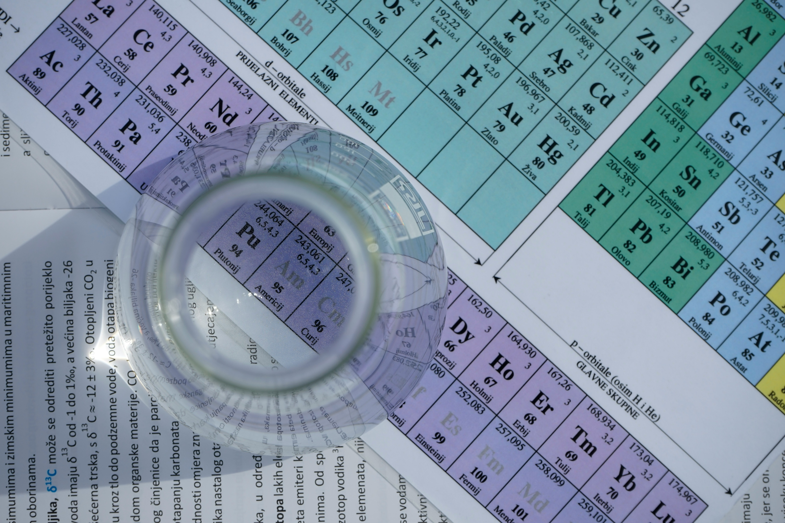

Découvrez les sections du lycée
Sections réservées aux lycéens
Abibac
La section Abibac est une section binationale franco-allemande, qui permet l'obtention du baccalauréat français et de l'Abitur. Monod est le premier lycée à avoir ouvert cette section.

Européenne Anglais/Allemand
La section européenne permet d'obtenir une mention européenne au baccalauréat. Les élèves renforcent la langue choisie lors de cours d'histoire-géographie ou en mathématiques.
UPE2A
L'Unité Pédagogique pour Elèves Allophones Arrivants est une section qui permet aux élèves allophones de suivre des cours de français et de s'intégrer dans le système scolaire français.
Sections réservées aux étudiants

MPSI
La classe préparatoire MPSI est une section qui prépare les élèves aux concours des grandes écoles d'ingénieurs. Les élèves suivent des cours de mathématiques, physique et sciences de l'ingénieur.

PCSI
La classe préparatoire PCSI est une section qui prépare les élèves aux concours des grandes écoles d'ingénieurs. Les élèves suivent des cours intensifs de physique, chimie et sciences de l'ingénieur.
Hypokhâgne
La classe préparatoire Hypokhâgne est une section qui prépare les élèves aux concours des grandes écoles de lettres. Les élèves suivent des cours de lettres, philosophie et langues anciennes.

Classe arbitrage
La classe arbitrage est une section sportive qui permet aux élèves de se former à l'arbitrage dans le cadre de leurs études supérieurs. Les élèves peuvent obtenir un diplôme d'arbitrage.
Brevets de Technicien Supérieur
Nous proposons des BTS en alternance ou en initial. Les élèves peuvent obtenir un BTS CRSA, Electrotechnique ou Conseil et Commercialisation de Solutions Techniques.